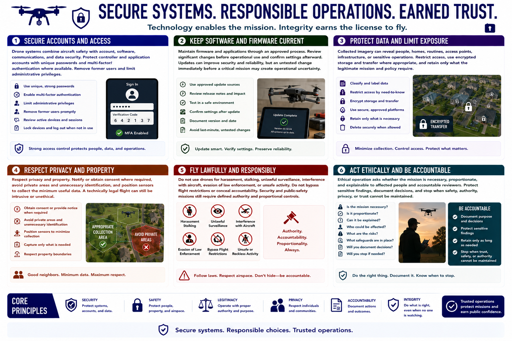

Security, Privacy, and Ethics
Connecting to LMS... Progress: in progress

Narration
Drone systems combine aircraft safety with account, software, communications, and data security. Protect controller and application accounts with unique passwords and multi-factor authentication where available. Remove former users and limit administrative privileges.
Maintain firmware and applications through an approved process. Review significant changes before operational use and confirm settings afterward. Updates can improve security and reliability, but an untested change immediately before a critical mission may create operational uncertainty.
Collected imagery can reveal people, homes, routines, access points, infrastructure, or sensitive operations. Restrict access, use encrypted storage and transfer where appropriate, and retain only what the legitimate mission and policy require.
Respect privacy and property. Notify or obtain consent where required, avoid private areas and unnecessary identification, and position sensors to collect the minimum useful data. A technically legal flight can still be intrusive or unethical.
Do not use drones for harassment, stalking, unlawful surveillance, interference with aircraft, evasion of law enforcement, or unsafe activity. Do not bypass flight restrictions or conceal accountability. Security and public-safety missions still require defined authority and proportional controls.
Ethical operation asks whether the mission is necessary, proportionate, and explainable to affected people and accountable reviewers. Protect sensitive findings, document decisions, and stop when safety, authority, privacy, or trust cannot be maintained.